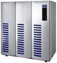

| LevSelector.com |
Enterprise Hardware
|  | On this site: | |
| •
servers
• network • firewalls • storage |
•
SCSI
• RAID • clusters • misc |
•
www.epinions.com/enth
- Epinions.com - Reviews of Enterprise Hardware
| Servers | home - top of the page - |
•
www.sun.com/servers/
- Sun
•
www.hp.com/country/us/eng/prodserv.htm
- Hewlett Packard
•
www.sgi.com/servers/
- Silicon Graphics
•
www.ibm.com/servers/home.html
- IBM
•
www.compaq.com/products/servers/
- Compaq
•
www.dell.com/us/en/biz/products/line_servers.htm
- Dell
•
www.computingsa.co.za/1998/11/23/Hardware/har01.htm
- NUMA technology
"Support for NonUniform Memory Architectures (NUMA-s) as a core
technology in the next generation of servers is starting to grow with Hewlett-Packard,
Compaq Computer and Sun Microsystems, all planning on implementing Numa
designs in 1999".
•
http://www.findarticles.com/m0IFW/50_20/53404189/p1/article.jhtml
-
•
www.informationweek.com/...
- IBM Builds Data Warehousing Strategy On NUMA
Technology
| Network | home - top of the page - |
Routers, switches, hubs...
•
www.cisco.com
- Cisco routers, switches, local director, distributed director
•
www.foundrynet.com/
- switches
•
www.baynetworks.com
- Bay Networks - a Nortel (Northern Telecom) Business
•
www.nortelnetworks.com
- Nortel Networks
•
www.3com.com/solutions/enterprise
- 3Com
•
www.linksys.com
- Linksys
•
www.asante.com
- Asante Technologies
•www.myri.com
- Myrinet - high speed low latency
comm. hardware (super ether) - switches, "Network in a Box" components,
Myrinet-link cables or fiber, software (open source!).
T1, T3, DS3
load testing
monitoring equipment
| Firewalls | home - top of the page - |
•
www.thegild.com/firewall/
- Firewalls Overview
•
www.cerias.purdue.edu/coast/firewalls/fw-body.html
- Resources
•
www.interhack.net/pubs/fwfaq/
- FAQ
•
www.checkpoint.com/
- Checkpoint
•
enterprisesecurity.symantec.com/products/
- Symantec security products
Raptor Firewall - merged into Symantec
| Storage | home - top of the page - |
•
www.emc.com
- EMC hard drives. EMC is a market leader in storage solutions.
•
www.unisys.com/marketplace/storage
- Unisys
•
www.tivoli.com/products/index/storage_mgr
- Tivoli
•
www.dothill.com/products/sannet.htm
- DotHill
SAN = Storage Area network
NAS = Network Attached Storage
•
http://events.network24.com/A395/sessions/A1078/pages/preview/page$.asp?eid=A395
- hottest topics in storage as well as hard choice for growing companies.
Read more on cpm.net's Networkmagazine.com,
eg:
•
http://Networkmagazine.com/article/NMG20010104S0002
- "State-of-the-Art Storage" article
•
www.veritas.com
- Veritas software is #1 backup solution for unix
Veritas file system, Veritas volume manager, Veritas Storage
Area Network
Backup tapes (AIT, DLT, DAT 4 mm - Quantum, Sony, Sun, HP):
•
www.tapeonline.com
- online store to buy tapes
•
buytape.seagate.com
- online store
•
www.aittape.com
- AIT (Advanced Intelligent Tape)
•
www.disk-o-tape.com/dlt.htm
- DLT tape
•
www.procom.com/tapebackupns.html
- Procom - AIT drives & Arrays, DLT drives, libraries, Arrays, DAT,
Autoloaders and Autoloader Arrays.
•
www.compaq.com/products/storageworks/..
- Compaq DLT Drive Model 35/70 (35 GB uncompressed)
•
www.solumedia.com/dlt7000.htm
- DLT 70 GB tape from Quantum
•
www.hp.com/tape/colorado/index.html
- HP small business backup
| SCSI | home - top of the page - |
SCSI (Small Computer System Interface - pronounced as "scuzzy") - a set of interfaces that allow personal computers to communicate with peripheral hardware. Originally developed at Apple Computer. In addition to faster data rates, SCSI is more flexible than earlier parallel data transfer interfaces.
The popular Ultra-2 SCSI for a 16-bit bus can transfer data at up to 80 megabytes per second (MBps). SCSI allows up to 7 or 15 devices (depending on the bus width) to be connected to a single SCSI port in daisy-chain fashion. Cable distance - up to 12 meters.
The latest SCSI standard is Ultra-3 increases the maximum burst rate
from 80 Mbps to 160 Mbps. The standard is also sometimes referred
to as Ultra160/m and offers additional cyclical redundancy checking (CRC)
for ensuring the integrity of transferred data and domain validation for
testing the SCSI network.
| RAID | home - top of the page - |
RAID systems consist of two or more independent disk drives set up so they appear to a host computer (and its operating system) as a single, large disk drive. The term RAID goes back to a 1988 paper out of the University of California, Berkeley, which referred to "Redundant Arrays of Inexpensive Disks." Today, the word "Independent" has replaced "Inexpensive" but the concept hasn't changed much.
"In the beginning of the '90s, zero percentage of storage subsystems were RAID. Today, 80 to 90 percent of the new systems going in are RAID."
There are different RAID configurations (Levels):
Level 0 - stripes data across multiple disks. "very high performance at low cost, ... The downside is that if you lose one disk out the stripe set, you've lost access to [all] the data because a piece is missing." Level 0 RAID is usually used in conjunction with another RAID level (most often Level 1) to provide dependability.
Level 1 - data is stored simultaneously on two disks with a process called mirroring. The same data is copied and stored on different disks so there is 100 percent redundancy. Should one drive fail, another drive has the exact same data. Very popular (in the financial services industry, for example).
Level 2 - provides data redundancy by using dedicated check disks and by interleaving error correction code (Hamming code) across several disks. Rarely used.
Level 3 - Rather than mirroring all data, as in Level 1, Level 3 -- and all subsequent levels -- distributes data across disks. Should one disk fail, RAID 3 uses parity information to mathematically reconstruct missing data from an array's remaining drives. There's a similarity between Level 3 and Level 0 in that the data is striped across drives, but with Level 3, one drive is reserved as a place to store the parity information. If two drives fail, you'll lose data.
Level 4 - is similar to Level 3, but it's used for databases. The stripe depth -- the amount of data in each stripe -- is substantially larger than in Level 3. This level, according to MTI, performs best with applications that require high I/O request rates such as transaction processing dominated by inquires rather than file updates. The company notes Level 4 is rarely implemented in commercial offerings.
Level 5 - Along with Level 1, Level 5 is the most commonly used RAID level. Level 5 stripes data and distributes the data over an array of drives. Technically, Level 5 and Level 4 are similar. If you have four drives with data, with Level 5, you need one additional drive to hold the parity information; with Level 1, four extra drives are needed because each drive is mirrored. That means Level 5 has a cost advantage over Level 1.
MTI says the Level 5 is especially well-suited for applications involving a large number of concurrent read requests where high data access rates are desirable and there is a higher proportion of reads compared to writes. Examples include inquiry-type interactive transaction processing, multi-user file servers, group office automation, and customer service programs.
How do you choose between Level 1 and Level 5? Compaq's Ken Bates says that where the load consists of 55 percent to 60 percent of reads or more, then Level 5 is probably the best choice. If the reads constitute less than 55 percent (which means the writes are 45 percent or more of what's going on), Level 1 is likely the way to go. He says such databases as Oracle and Sybase often run at 70 percent read so they work well with Level 5. A Web server, where there are many search requests, can have 90 percent or more of its work done as reads, making it a good candidate for Level 5.
Level 0+1 - is also written 0/1: This is where Level 0 and Level 1 are combined to take advantage of the strengths of both: the performance benefits of Level 0 and the data availability of Level 1. In this level, data blocks are broken down into pieces and distributed across several disk drives (as in Level 0), while each of these drives is replicated to another drive (as in Level 1). I/O requests are spread across the drives, rather than going to a single drive. This level has high reliability and performance, though it costs somewhat more than Level 5 because all the disks are replicated. This level is often used with smaller networks.
The most commonly used levels are 0, 1 and 5. Level 3 has some popularity, and Levels 2 and 4 are not used much at all.
There are other levels, though. Level 0 is sometimes
used with levels other than 1 (such as 5). There's a Level 6, which is
a bit like Level 5, only it has two parity disks. Another Level is 53,
which combines characteristics of Levels 0, 3, and 5. There is also software
RAID, where a software operating system can emulate some of the functions
of a hardware RAID storage system, such as mirroring (all the previously
mentioned levels of RAID are for hardware systems). A software RAID solution
is relatively low-cost but lacks the capacity, performance, management
capabilities, and reliability of a hardware solution.
| Clusters | home - top of the page - |
•
www.pc.ibm.com/us/netfinity/cluster
- IBM Netfinity High Availability Cluster
Solutions
•
www-1.ibm.com/servers/aix/products/ibmsw/high_avail_network
- IBM High Availability and Networking
•
www.csse.monash.edu.au/~rajkumar/cluster/
- Cluster Computing Resources - books, links, etc.
•
www.baltzer.nl/cluster/cluster.asp
- Cluster Computing (Journal)
•
www.clusterheadaches.com
- Cluster Headaches support group web site
•
www.csse.monash.edu.au/~rajkumar/tfcc/
- IEEE Computer Society Task Force on Cluster Computing
•
www.topclusters.org
- Top Clusters site discussions, benchmarks, etc.
•
www.xtreme-machines.com/x-cluster-qs.html
- getting a cluster working
•
www.beowulf.org
- NASA, Scyld Computing Corporation
•
www.linuxvirtualserver.org
- Linux Virtual Server project
•
linux-ha.org
- High-Availability Linux Project
•
oradoc.photo.net/ora816/paraserv.816/a76968/pshavdtl.htm
- High Availability and Oracle Parallel Server
•
oradoc.photo.net/ora816/paraserv.816/a76934/chap3.htm
- Installing and Creating an Oracle Parallel Server Database
• www.sybase.com/detail/1,3693,1001811,00.html - native Sun Cluster 2.2 (Sun's multi-platform clustering solution) support for Sybase® Adaptive Server® Enterprise 12.0 (ASE 12.0).
•
www.veritas.com/us/products/clusterserver/
- Veritas Cluster Server
•
www.veritas.com/us/products/sybaseedition/
- VERITAS Database Edition for Sybase
| Misc. | home - top of the page - |
•
www.rl.af.mil/div/IFO/IFOI/IFOIL/links.html
- Technical Library Related Resources on the WWW
•
www.dacs.dtic.mil/techs/neural/neural_ToC.html
- Artifical Neural Networks Technology
---------------